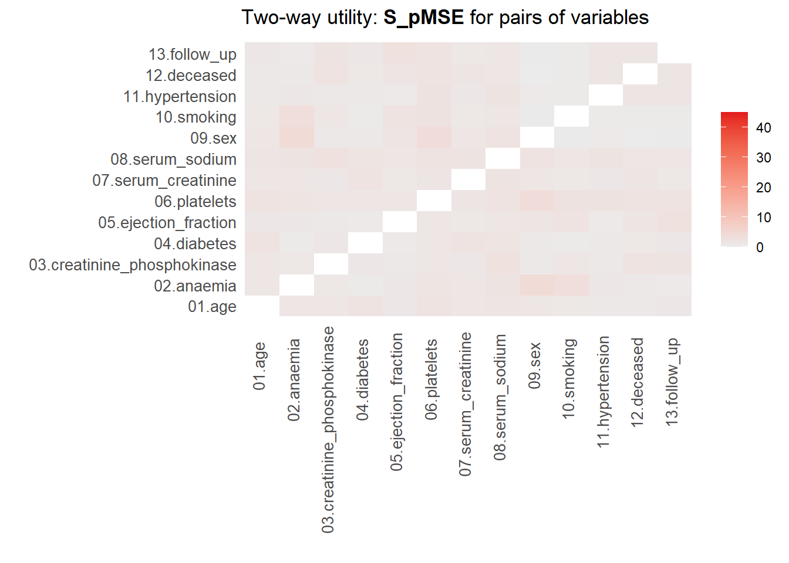

heart_failure |> head(10)
complete(syn_param) |> head(10)
complete(syn_nonparam) |> head(10)Practical 2: Evaluating utility and privacy of synthetic data
Fake it ’till you make it: Generating synthetic data with high utility in R
Note. This practical builds on Practical 1, and assumes you have completed all these exercises.
Synthetic data utility
The quality of synthetic data sets can be assessed on multiple levels and in multiple different ways (e.g., quantitatively, but also visually). Starting on a univariate level, the distributions of the synthetic data sets can be compared with the distribution of the observed data. For categorical variables, the observed counts in each category can be compared between the real and synthetic data. For continuous variables, the density of the real and synthetic data can be compared. Later on, we also look at the utility of the synthetic data on a multivariate level.
Univariate data utility
1. To get an idea of whether creating the synthetic data went accordingly, compare the first 10 rows of the original data with the first 10 rows of the synthetic data sets (inspect both the parametric and the non-parametric set). Do you notice any differences?
Hint: You can use complete() to extract the synthetic data set from the synthetic data objects.
Show Code
Apart from inspecting the data itself, we can assess distributional similarity between the observed and synthetic data.
2. Compare the descriptive statistics from the synthetic data sets with the descriptive statistics from the observed data. What do you see?
Hint: Use the function describe() from the psych package to do this.
Show Code
heart_failure |>
describe()
complete(syn_param) |>
describe()
complete(syn_nonparam) |>
describe()3. Create a bar plot using geom_bar() for each categorical variable in the data, mapping these variables to the x-axis, with one bar per category for the observed data, and one bar per category for the synthetic data. What do you see?
Hint 1: Within ggmice, set mapping = aes(x = VARIABLE, group = .imp), and within geom_bar(), set mapping = aes(y = after_stat(prop)) and position = position_dodge() to make sure the bars are comparable.
Show Code For A Single Variable
p_anaemia_param <-
ggmice(syn_param, aes(x = anaemia, group = .imp)) +
geom_bar(aes(y = after_stat(prop)),
position = position_dodge2(),
fill = "transparent") +
ggtitle("Parametric synthesis")
p_anaemia_nonparam <-
ggmice(syn_nonparam, aes(x = anaemia, group = .imp)) +
geom_bar(aes(y = after_stat(prop)),
position = position_dodge2(),
fill = "transparent") +
ggtitle("Non-parametric synthesis")This procedure can be repeated for all categorical variables in the data.
Show Output For A Single Variable

Hint 2: You can map over all categorical variables by creating a vector with the column names of all categorical variables, and using purrr::map() in combination with aes(.data[[.x]]) and patchwork::wrap_plots().
Show Code For All Categorical Variables
p_cat_param <-
heart_failure |>
select(where(is.factor)) |>
colnames() |>
map(~ggmice(syn_param, mapping = aes(.data[[.x]], group = .imp)) +
geom_bar(aes(y = after_stat(prop)),
position = position_dodge2(),
fill = "transparent")) |>
wrap_plots(guides = 'collect') +
plot_annotation(title = "Parametric synthesis") &
theme(legend.position = "bottom")
p_cat_nonparam <-
heart_failure |>
select(where(is.factor)) |>
colnames() |>
map(~ggmice(syn_nonparam, mapping = aes(.data[[.x]], group = .imp)) +
geom_bar(aes(y = after_stat(prop)),
position = position_dodge2(),
fill = "transparent")) |>
patchwork::wrap_plots(guides = 'collect') +
plot_annotation(title = "Non-parametric synthesis") &
theme(legend.position = "bottom")Now we do the same for the continuous variables, but rather than creating a bar chart, we create a density plot.
4. Create a density plot for each continuous variable with ggmice(), mapping these variables to the x-axis, using the function geom_density(). What do you see?
Show Code For A Single Variable
p_age_param <-
ggmice(syn_param, aes(x = age, group = .imp)) +
geom_density() +
ggtitle("Parametric synthesis")
p_age_nonparam <-
ggmice(syn_nonparam, aes(x = age, group = .imp)) +
geom_density() +
ggtitle("Parametric synthesis")This procedure can be repeated for all continuous variables in the data.
Show Code For All Continuous Variables
p_cont_param <-
heart_failure |>
select(where(is.numeric)) |>
colnames() |>
map(~ggmice(syn_param, mapping = aes(.data[[.x]], group = .imp)) +
geom_density()) |>
wrap_plots(guides = 'collect') +
plot_annotation(title = "Parametric synthesis") &
theme(legend.position = "bottom")
p_cont_nonparam <-
heart_failure |>
select(where(is.numeric)) |>
colnames() |>
map(~ggmice(syn_nonparam, mapping = aes(.data[[.x]], group = .imp)) +
geom_density()) |>
patchwork::wrap_plots(guides = 'collect') +
plot_annotation(title = "Non-parametric synthesis") &
theme(legend.position = "bottom")There are also other, more formal, ways to assess the utility of the synthetic data, although there is some critique against these methods (see, e.g., Drechsler 2022). Here, we will discuss one of these measures, the \(pMSE\), but there are others (although utility measures tend to correlate strongly in general). The intuition behind the \(pMSE\) is to predict whether an observation is actually observed, or a synthetic record. If this is possible, the observed and synthetic data differ on at least one dimension, which allows to distinguish between the records.
Formally, the \(pMSE\) is defined as \[ pMSE = \frac{1}{n_{obs} + n_{syn}} \Bigg( \sum^{n_{obs}}_{i=1} \Big(\hat{\pi}_i - \frac{n_{obs}}{n_{obs} + n_{syn}}\Big)^2 + \sum^{n_{obs} + n_{syn}}_{i={(n_{obs} + 1)}} \Big(\hat{\pi_i} - \frac{n_{syn}}{n_{obs} + n_{syn}}\Big)^2 \Bigg), \] which, in our case, simplifies to \[ pMSE = \frac{1}{598} \Bigg( \sum^{n_{obs} + n_{syn}}_{i=1} \Big(\hat{\pi}_i - 0.5\Big)^2 \Bigg), \] where \(n_{obs}\) and \(n_{syn}\) are the sample sizes of the observed and synthetic data, \(\hat{\pi}_i\) is the probability of belonging to the synthetic data.
5. Calculate the \(pMSE\) for the variable creatinine_phosphokinase for both synthetic sets and compare the values between both synthesis methods. Use a logistic regression model to create the probabilities \(\pi\). What do you see?
Hint: Stack the synthetic and observed data below each other, create an indicator for whether the data is real or synthetic and use this indicator as dependent variable in a logistic regression model. Then calculate the predicted probabilities using predict(), and plug these probabilities into the formula above.
Show Code
pi_param <- complete(syn_param) |>
bind_rows(`1` = _,
`0` = heart_failure,
.id = "Synthetic") |>
mutate(Synthetic = as.factor(Synthetic)) |>
glm(formula = Synthetic ~ creatinine_phosphokinase, family = binomial) |>
predict(type = "response")
pi_nonparam <- complete(syn_nonparam) |>
bind_rows(`1` = _,
`0` = heart_failure,
.id = "Synthetic") |>
mutate(Synthetic = as.factor(Synthetic)) |>
glm(formula = Synthetic ~ creatinine_phosphokinase, family = binomial) |>
predict(type = "response")
pmse_param <- mean((pi_param - 0.5)^2)
pmse_nonparam <- mean((pi_nonparam - 0.5)^2)It can be hard to interpret the values of the \(pMSE\), because they say little about how useful the synthetic data is in general. To get a more insightful measure, we can take ratio of the calculated \(pMSE\) over the expected \(pMSE\) under the null distribution of a correct synthesis model (i.e., in line with the data-generating model). The \(pMSE\) ratio is given by \[ \begin{aligned} pMSE \text{ ratio } &= \frac{pMSE} {(k-1)(\frac{n_{\text{obs}}}{n_{\text{syn}} + n_{\text{obs}}})^2(\frac{n_{\text{syn}}}{n_{\text{syn}} + n_{\text{obs}}}) / (n_{\text{obs}} + n_{\text{syn}})} \\ &= \frac{pMSE}{(k-1)(\frac{1}{2})^3/(n_{obs} + n_{syn})}, \end{aligned} \] where \(k\) denotes the number of predictors in the propensity score model, including the intercept. Note that this formulation only holds for a \(pMSE\) that is obtained through logistic regression. When different methods are used to calculate the probabilities, the null distribution can be obtained by using a permutation test.
In our case, we get the following for the \(pMSE\) ratio.
pmse_param / ((2-1)*(1/2)^3/(2*nrow(heart_failure)))[1] 1.213687pmse_nonparam / ((2-1)*(1/2)^3/(2*nrow(heart_failure)))[1] 0.2491319Ideally, the \(pMSE\) ratio equals \(1\), but according to the synthpop authors, values below \(3\) are indicative of high quality synthetic data, while values below \(10\) are deemed acceptable (Raab, Nowok, and Dibben 2021). This would indicate that both synthesis models are very good models to synthesize the variable creatinine_phosphokinase. Yet, I would make some reservations with respect to the quality of the parametric synthesis model in this case.
Multivariate data utility
Being able to reproduce the original univariate distributions is a good first step, but generally the goal of synthetic data reaches beyond that. Specifically, we often want to reproduce the relationships between the variables in the data. In the previous section, we saw that an evaluation of utility is often best carried out through visualizations. However, creating visualizations is cumbersome for multivariate relationships. Creating visualizations beyond bivariate relationships is often not feasible, whereas displaying all bivariate relationships in the data already results in \(p(p-1)/2\) different figures.
In the synthetic data literature, a distinction is often made between general and specific utility measures. General utility measures assess to what extent the relationships between combinations of variables (and potential interactions between them) are preserved in the synthetic data set. These measures are often for pairs of variables, or for all combinations of variables. Specific utility measures focus, as the name already suggests, on a specific analysis. This analysis is performed on the observed data and the synthetic data, and the similarity between inferences on these data sets is quantified.
General utility measures
Continuing with our \(pMSE\) approach, we can inspect which variables can predict whether observations are “true” or “synthetic” using the \(pMSE\)-ratio, similarly to what we just did using individual variables. We first try to predict the class of all observations by using all variables simultaneously, and hereafter we look at the results for all unique pairs of variables in the data.
6. Use the function utility.gen.data.frame() from the synthpop package to calculate the \(pMSE\)-ratio using all variables for both synthetic sets. What do you see?
Show Code
utility.gen.data.frame(complete(syn_param), heart_failure)
utility.gen.data.frame(complete(syn_nonparam), heart_failure)7. Use the function utility.tables.data.frame() from the synthpop package to calculate the \(pMSE\)-ratio for each pair of variables for both synthetic sets. What do you see?
Show Code
utility.tables.data.frame(complete(syn_param), heart_failure,
min.scale = 0, max.scale = 30)
utility.tables.data.frame(complete(syn_nonparam), heart_failure,
min.scale = 0, max.scale = 30)
Show Output
Two-way utility: S_pMSE value plotted for 78 pairs of variables.
Variable combinations with worst 5 utility scores (S_pMSE):
07.serum_creatinine:12.deceased
26.0859
02.anaemia:03.creatinine_phosphokinase
25.7090
02.anaemia:07.serum_creatinine
23.9174
07.serum_creatinine:11.hypertension
23.6146
03.creatinine_phosphokinase:11.hypertension
23.5373 
Medians and maxima of selected utility measures for all tables compared
Medians Maxima
pMSE 0.0128 0.0722
S_pMSE 6.1110 26.0859
df 9.0000 24.0000
For more details of all scores use print.tabs = TRUE.
Two-way utility: S_pMSE value plotted for 78 pairs of variables.
Variable combinations with worst 5 utility scores (S_pMSE):
09.sex:10.smoking 12.deceased:13.follow_up
8.5556 3.9655
02.anaemia:10.smoking 06.platelets:08.serum_sodium
3.2849 2.3033
01.age:04.diabetes
2.2927 
Medians and maxima of selected utility measures for all tables compared
Medians Maxima
pMSE 0.0018 0.0116
S_pMSE 0.9690 8.5556
df 9.0000 24.0000
For more details of all scores use print.tabs = TRUE.Here, we finally see that our parametric synthesis model is severely flawed. Quite some of the \(pMSE\) ratios are larger than 20, which means that we did in poor job in synthesizing these variables and the relationship between these variables. Note that we partly knew this already from our visualizations Our non-parametric synthesis model is doing very good. The highest \(pMSE\)-ratio values are (much) smaller than \(10\), which actually indicates that our synthetic data are of high quality.
Specific utility measures
Specific utility measures assess whether the same analysis on the observed and the synthetic data gives similar results. Say that we are interested in, for instance, the relationship between whether a person survives, the age of this person, whether this person has diabetes and whether or not this person smokes, including the follow-up time as a control variable in the model.
8. Fit this model as a logistic regression model using glm() with family = binomial and data = complete(synthetic_data_object). Compare the results obtained with both synthetic data sets with the results obtained on the original data. What do you see?
Show Code
fit_param <- glm(deceased ~ age + diabetes + smoking + follow_up,
family = binomial,
data = complete(syn_param))
fit_nonparam <- glm(deceased ~ age + diabetes + smoking + follow_up,
family = binomial,
data = complete(syn_nonparam))
fit_obs <- glm(deceased ~ age + diabetes + smoking + follow_up,
family = binomial,
data = heart_failure)Statistical disclosure control
In general, synthetic data protects the privacy of participants quite well, especially when all cells are imputed. Even if some observations are partly reproduced, it is hard, if not impossible, to assess which part of an observations values are real, and which are fake. Hence, with respect to individuals little can be learned from synthetic data. However, it is always good to assess whether you are not accidentally releasing an actual observation in the synthetic data. Even though an attacker is not likely to find out, participants being able to “identify” themselves in the synthetic data set may result in trust problems in the future.
9. Append the original data to the synthetic data, and check whether some of the observations in the original data also occur in the synthetic data.
Hint 1: You do not have to do this for the data generated with parametric methods, because these do not reproduce the original values, at least not for the continuous variables.
Hint 2: Start with the synthetic data, and append the original data to it. Subsequently, you can use duplicated() and which() to check whether any (and if so, which) observation(s) occur repeatedly.
Show Code
duplicated_rows <-
complete(syn_nonparam) |>
bind_rows(heart_failure) |>
duplicated() |>
which()Inferences from synthetic data
Lastly, when you have obtained a synthetic data set and want to make inferences from this set, you have to be careful, because generating synthetic data adds variance to the already present sampling variance that you take into account when evaluating hypotheses. Specifically, if you want to make inferences with respect to the sample of original observations, you can use unaltered analysis techniques and corresponding, conventional standard errors.
However, if you want to inferences with respect to the population the sample is taken from, you will have to adjust the standard errors, to account for the fact that the synthesis procedure adds additional variance. The amount of variance that is added, depends on the number of synthetic data sets that are generated. Intuitively, when generating multiple synthetic data sets, the additional random noise that is induced by the synthesis cancels out, making the parameter estimates more stable.
There are two ways to obtain statistically valid results from synthetic data. The first requires that you have multiple synthetic data sets, and estimates the variance between the obtained estimates in each of the synthetic data sets. The corresponding pooling rules are presented in Reiter (2003). For scalar \(Q\), with \(q^{(i)}\) and \(u^{(i)}\) the point estimate and the corresponding variance estimate in synthetic data set \(D^{(i)}\) for \(i = 1, \dots, m\), the following quantities are needed for inferences:
\[ \begin{aligned} \bar{q}_m &= \sum_{i=1}^m \frac{q^{(i)}}{m}, \\ b_m &= \sum_{i=1}^m \frac{(q^{(i)} - \bar{q}_m)}{m-1}, \\ \bar{u}_m &= \sum_{i=1}^m \frac{u^{(i)}}{m}. \end{aligned} \]
The analyst can use \(\bar{q}_m\) to estimate \(Q\) and \[ T_p = \frac{b_m}{m} + \bar{u}_m \] to estimate the variance of \(\bar{q}_m\). Then, \(\frac{b_m}{m}\) is the correction factor for the additional variance due to using a finite number of imputations.
The second way to obtain statistically valid results from synthetic data allows for multiple synthetic data sets, but does not require it (Raab, Nowok, and Dibben 2016). In this case, the between-imputation variance is estimated from the standard error(s) of the estimates, which simplifies the total variance of each estimate to \[ T_s = \frac{\bar{u}_m}{m} + \bar{u}_m. \] When you have \(m = 1\) synthetic data set, we have \(T_s = 2u\), where \(u\) is the variance estimate obtained in that synthetic set.
References
Drechsler, Jörg. 2022. “Challenges in Measuring Utility for Fully Synthetic Data.” In Privacy in Statistical Databases, edited by Josep Domingo-Ferrer and Maryline Laurent, 220–33. Cham: Springer International Publishing. https://doi.org/10.1007/978-3-031-13945-1_16.
Raab, Gillian M, Beata Nowok, and Chris Dibben. 2016. “Practical Data Synthesis for Large Samples.” Journal of Privacy and Confidentiality 7 (3): 67–97.
———. 2021. “Assessing, Visualizing and Improving the Utility of Synthetic Data.” arXiv Preprint arXiv:2109.12717.
Reiter, Jerome P. 2003. “Inference for Partially Synthetic, Public Use Microdata Sets.” Survey Methodology 29 (2): 181–88.